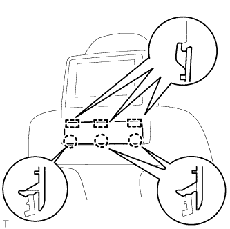
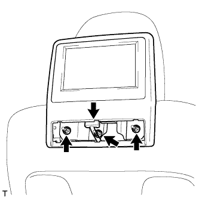
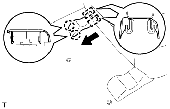
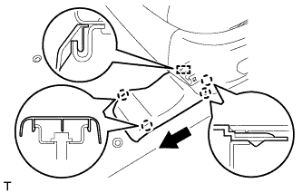
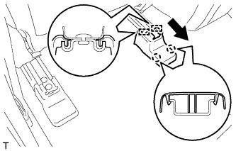
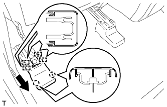
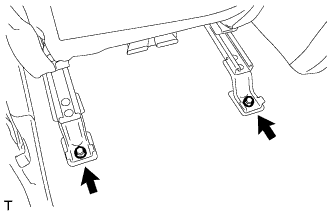
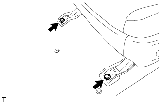

FRONT SEAT ASSEMBLY > REMOVAL |
| 1. REMOVE FRONT SEAT HEADREST ASSEMBLY |
Remove the front seat headrest.
| 2. REMOVE TELEVISION BASE (w/ Rear Seat Entertainment System) |
|  |
Using a moulding remover, detach the 3 claws and 3 guides and remove the television base.
| 3. REMOVE TELEVISION DISPLAY ASSEMBLY (w/ Rear Seat Entertainment System) |
|  |
Disconnect the connector.
Remove the 3 nuts and television display assembly.
| 4. REMOVE FRONT SEAT INNER TRACK BRACKET COVER LH |
Operate the power seat switch (slide switch) to move the seat to the rearmost position.
|  |
Using a moulding remover, detach the 2 claws.
Move the cover in the direction of the arrow to detach the 2 guides and remove the cover.
| 5. REMOVE FRONT SEAT OUTER TRACK BRACKET COVER LH |
|  |
Using a moulding remover, detach the 2 claws.
Move the cover in the direction of the arrow to detach the 2 claws and guide and remove the cover.
| 6. REMOVE INNER SEAT TRACK BRACKET COVER LH |
Operate the power seat switch (slide switch) to move the seat to the foremost position.
|  |
Using a moulding remover, detach the 2 claws.
Move the cover in the direction of the arrow to detach the 2 guides and remove the cover.
| 7. REMOVE SEAT TRACK COVER LH |
|  |
Using a moulding remover, detach the 2 claws.
Move the cover in the direction of the arrow to detach the 4 guides and remove the cover.
| 8. REMOVE FRONT SEAT ASSEMBLY |
|  |
Remove the 2 bolts.
Operate the power seat switch (slide switch) to move the seat to the rearmost position.
|  |
Remove the 2 bolts.
Operate the power seat switch (slide switch) to move the seat to the center position, operate the power seat switch (reclining switch) to move the seatback to the upright position, and operate the power seat switch (lifter switch, front vertical switch) to move the seat cushion to the uppermost position.
Disconnect the cable from the negative (-) battery terminal.
| Condition | Waiting Time |
| Vehicle enrolled in G-BOOK system | 6 minutes |
| Vehicle not enrolled in G-BOOK system | 1 minute |
Disconnect the connectors under the seat.
Remove the front seat assembly.